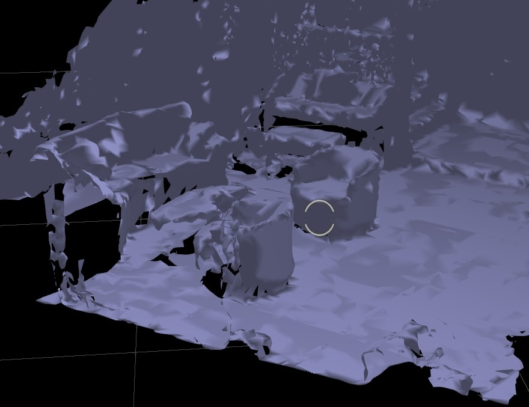
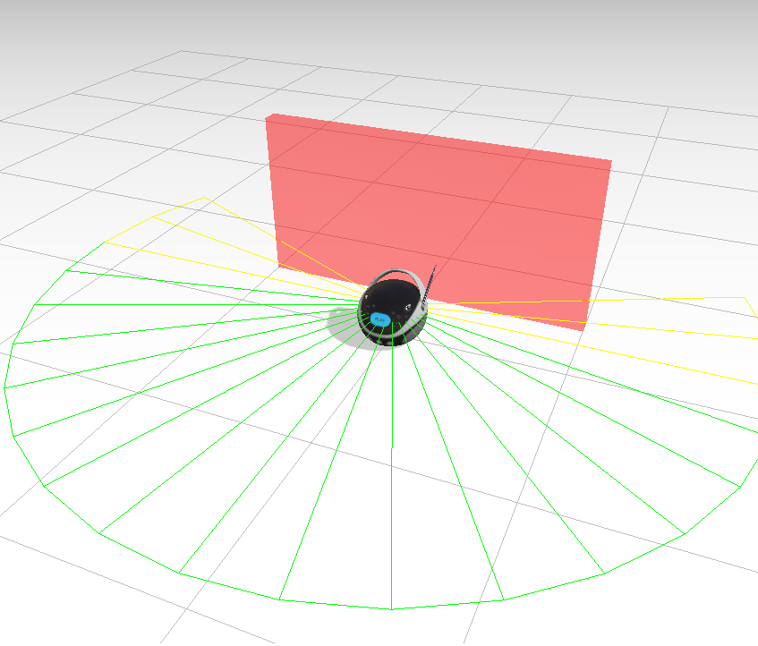
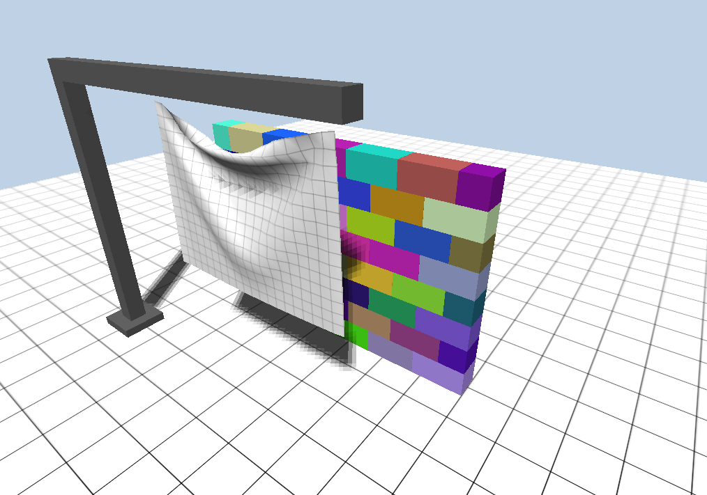
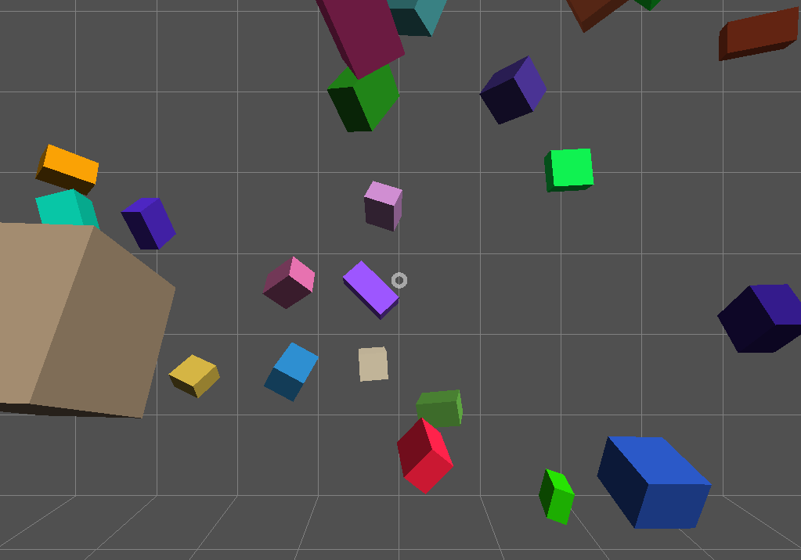
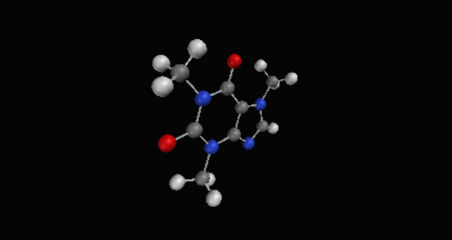

Sample HoloJs experiences for VR and AR
To run the following samples on your desktop, Mixed Reality headset or HoloLens, install the Spin View app from the Microsoft App Store.On the HoloLens, you can open the samples by running the Spin View app, gaze towards the QR codes and say scan.
Most of the samples in this section are based on ThreeJs examples
Ballshooter VR
Shoot balls with you VR controller (or hands on HoloLens) and see them bouncing around a virtual room. Adapted from https://threejs.org/examples/#webvr_ballshooter
VR paint
Demo for Gamepad input. Draw in 3D using your VR controller (or hands on HoloLens). VR headset and controller required. Uses Three's OBJ loader for the controller model. Adapted from https://threejs.org/examples/#webvr_vive_paintSpatial mapping (HoloLens only)
Demo for spatial mapping on HoloLens. Gets live updates from HoloLens's SurfaceObserver and renders meshes in ThreeJS with BufferGeometry.
Note: Does not run in browser. When surface mapping is not available (desktop,
VR), only the floor grid is rendered.
Run in Spin
View code
View JSON
Run in Spin
View code
View JSON
Directional sound
Demo for spatial sound. Move around the boombox to experience directional sound, audio dampening by the wall, audio falloff. Uses Three's GLTF loader and WebAudio. Adapted to run in VR from https://threejs.org/examples/#webaudio_orientation
Physics
Physics demo using ammo.js and ThreeJs. Use left/right controller triggers (or 'a' and 'q' keys) to move the flag and demolish the wall. Adapted to run in VR from https://threejs.org/examples/#webgl_physics_cloth
VR cubes
Cubes floating around in space. Adapted from https://threejs.org/examples/#webvr_cubes
Molecule viewer
View the 3D model of the caffeine molecule. Uses Three's PDB loader. Simplified sample based on https://threejs.org/examples/#webgl_loader_pdb